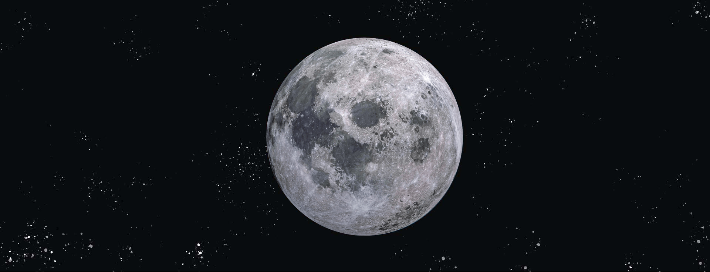
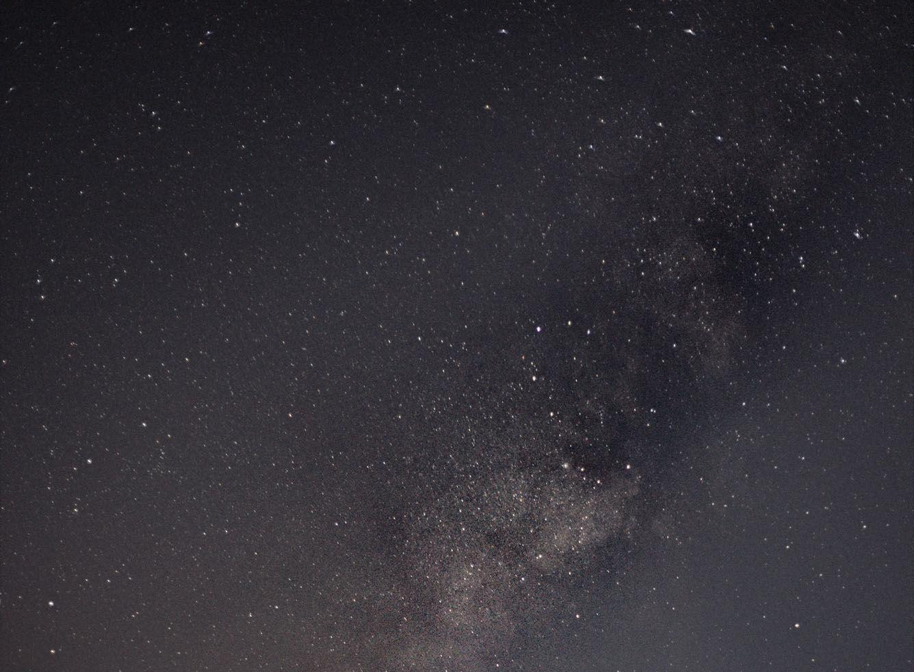

首页
太阳系
地球
太阳
金星
水星
火星
木星
土星
天王星
海王星
小行星世界
太阳系边缘
太阳系纵览
返回

月球｜MOON
月球是围绕地球旋转的球形天体，同时也是地球唯一的天然卫星。
作为我们夜空中最亮、最大的天体，月球通过缓和地球在其轴上的摆动，使地球成为一个更宜居的星球，从而
形成相对稳定的气候。它还引起潮汐，创造出引导人类数千年的节奏。
迄今为止，地球的月球是地球以外唯一人类涉足的地方。
月球
深入探索
月球的 3D 模型，浩瀚星河中的婵娟。
用鼠标拖动试试
Source: NASA Visualization Technology Applications and Development (VTAD)

质量：3.301×1023kg（地球质量的5.5%）
体积：6.803×1019m³（地球体积的5.6%）
与太阳的平均距离：5.791×107km（日地距离的38.7%）
直径：4880 km